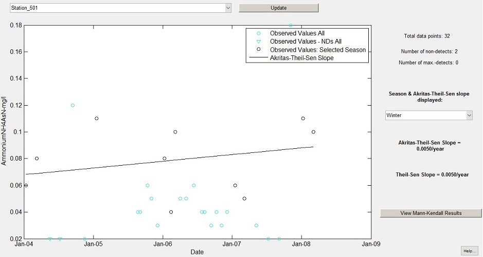

Welcome to Environmental Trend Analysis Software Eddy.
Eddy is a free program which has been developed as a tool to help scientists in assessing trends in groundwater and surface water quality parameters by reading data from Excel-based databases. The program can carry out maximum likelihood estimation linear regression (using normal, lognormal and gamma distributions) as well as variations of the Mann-Kendall trend test (implemented for seasonal data as well as corrected for autocorrelated data) in combination with a determination of Theil-Sen and Akritas-Theil-Sen slopes. Eddy can read and process data sets containing non-detect values and “greater-than” values, as flagged in a dataset by the symbols “<” and “>”. Analyses are then carried out without substituting censored values and without resulting in the loss of data.

Support or Contact
Having trouble with the program? Report bugs or submit feedback at Eddysoftware.mail@gmail.com.